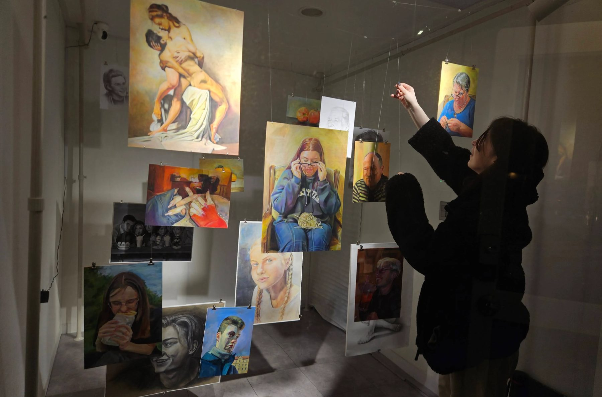
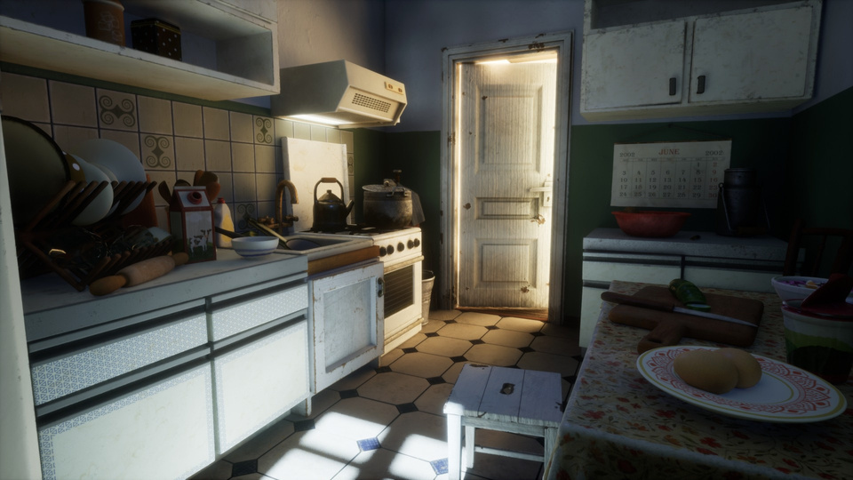

Tapytoja ir 3D menininkė — Vilnius
Kūryba, gimstanti iš stebėjimo ir įgaunanti formą.
Kūrinių kolekcija — šviesos, formos ir erdvės tarp jų studijos.
Peržiūrėkite visus darbus arba susisiekite dėl jus sudominusio kūrinio.

Parodos — „Momentukininkė“, galerija „The Closet“, Busanas · Peržiūrėti parodą →
Tapyba
Aliejinė ir akrilinė tapyba, nuo 2019 m.

3D darbai
Skulptūros, vizualizacijos ir personažų studijos